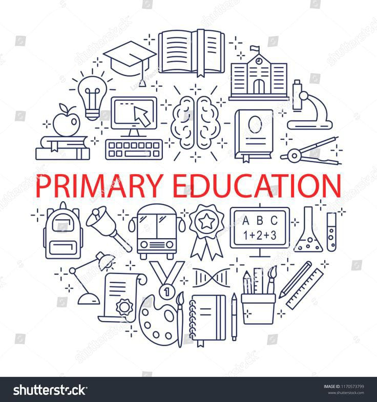
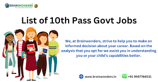
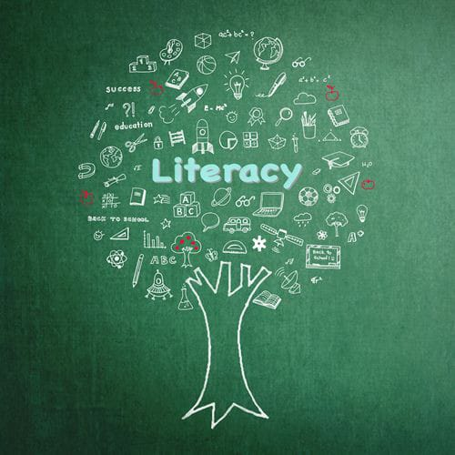
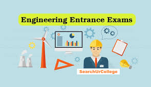
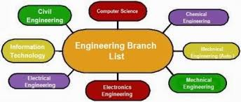
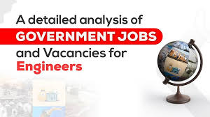

PORTFOLIO!
WELCOME TO PROTFOLIO.
PORTFOLIO IS A WEBSITE WHICH HELPS YOU TO SELECT A BETTER FUTURE FOR YOUR EDUCATION.
PORTFOLIO CONTAINS LATEST INFORMATION ABOUT THE CURRICULUM OF PRIMARY AND SECONDARY EDUCATION AND DEGREE COURSES IN TELANGANA!
FOR MORE INFORMATION-contact me at rishisai1306@gmail.com
PRIMARY EDUCATION:

SUBJECTS OF PRIMARY EDUACTION:
GOVERNMENT JOBS LIST FOR PRIMARY EDUCATION(10TH PASS):

SECONDARY EDUCATION:

SUBJECTS OF SECONDARY EDUCATION:
SOURCES(HANDOUTS/PDFS) FOR SECONDARY EDUCATION:
GOVERNMENT JOBS FOR SECONDARY EDUCATION(12TH PASS):
DEGREE AND B.TECH:
ENTRANCE EXAMINATIONS FOR ENGINEERING:

DEGREE AND B.TECH COURSES:

BEST AND TOP RANKED B.TECH AND DEGREE COLLEGES LIST:
RESOURCES AND SKILLS TO LEARN FOR DEGREE AND ENGINEERING:

GOVERNMENT JOBS AFTER DEGREE AND ENGINEERING:

PRIVATE AND CORPERATE JOBS AFTER COMPLETION OF DEGREE AND ENGINEERING: